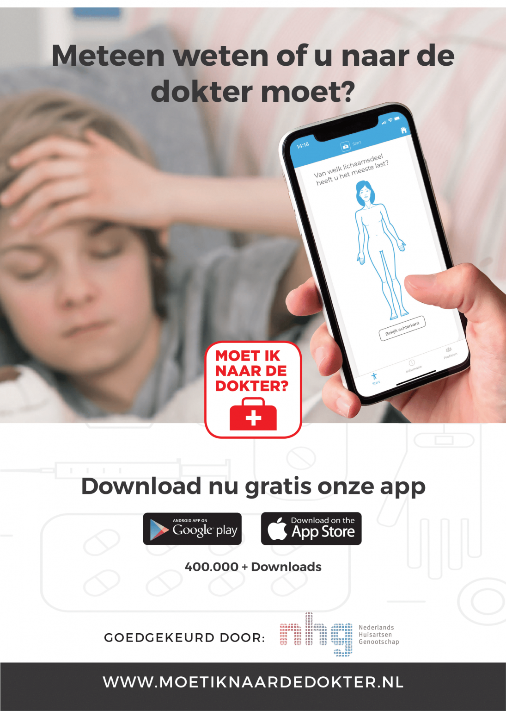
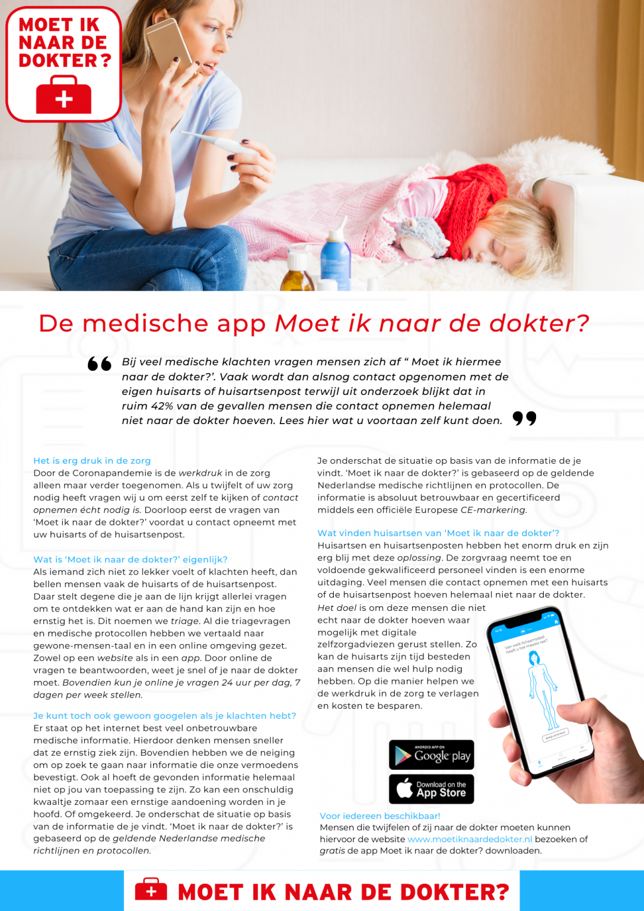

Promotiemateriaal
Wachtkamerfilmpjes
Hieronder kunt u alle niet-gesproken filmpjes downloaden die gemaakt zijn voor wachtkamerschermen. De filmpjes zijn beschikbaar met ondertiteling in het Nederlands, Engels, Turks en Marokkaans.
Posters en banners
Bent u enthousiast over het promoten van Moet ik naar de dokter? in uw wachtkamer? Wij kunnen u voorzien van posters en roll-up banners die aandacht trekken bij patiënten voor gebruik van de app.
Wilt u gratis posters of roll-up banners bestellen? Neem dan contact met ons op.
Huisstijlpakket van Moet Ik Naar De Dokter?
Download het huisstijl pakket voor de logo’s, promotiemateriaal en social media afbeeldingen. De logo’s worden in verschillende maten geleverd en de social media afbeeldingen voor de verschillende kanalen. daarnaast vind u hier ook een brochure, posters en andere materialen.
 